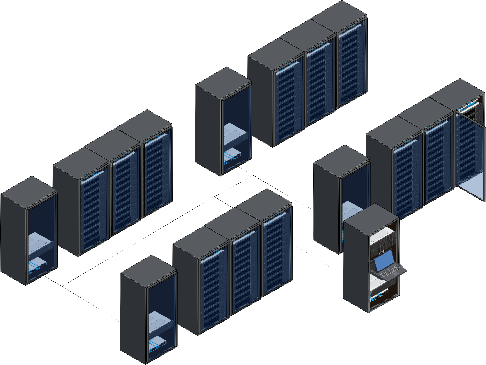
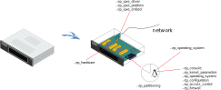

2. Vocabulary¶
Lets establish few common terms before going deeper in technical details.
Some words are important in BlueBanquise. Most of them are described here.
2.1. Ansible vocabulary¶
2.1.1. Host¶
An Ansible host (also often referred as a node) is a remote host managed by Ansible. An host can be a physical server, but also a VM, a container or something else.

Hosts are defined in /etc/bluebanquise/inventory/cluster/nodes.
Please do a difference between an Ansible managed host, and a host. All equipment that can have an ip address on the network are considered “host”, but only those with an ssh + python capability and on which we will use Ansible to deploy a configuration are considered “Ansible managed host”. They are declared the same way in the stack inventory.
2.1.2. Group¶
An Ansible group is a logical aggregation of hosts. For example, system administrator can define a group “database_servers” that would contain hosts “database1” and “database2”.
Groups allow Ansible to provide dedicated variables to member hosts or execute tasks on a set of hosts.
Note: a host can be part of multiple groups.
2.1.3. Variables¶
Variables in Ansible follow the YAML structure.
A variable is like in any programming language: a variable name, and a data related.
Multiple kind of variables exist in Ansible:
2.1.3.1. Simple¶
A simple variable is defined this way:
my_variable_1: hello!
my_variable_2: 7777
In Jinja2, variables will be accessible directly this way:
{{ my_variable_1 }}
Output will be:
hello!
2.1.3.2. List¶
A list is like an array, and can be iterated over:
my_names_list:
- bob
- alice
- henry
In Jinja2, variables in a list can be iterated over, or a specific value of the list can be used (like an array):
{% for i in my_names_list %}
{{ i }}
{% endfor %}
{{ my_names_list[0] }}
Note that index start at 0.
Output will be:
bob
alice
henry
bob
Note also that to check if a list is empty, it is possible to check the list itself:
{% if my_names_list %}
the list is not empty
{% else %}
the list is empty
{% endif %}
2.1.3.3. Dictionary¶
A dictionary, is simply a pack of other variables, organized as a tree, and defined under it (some kind of variables tree):
my_dictionarry_1:
my_variable_1: hello!
my_variable_2: 7777
my_sub_part:
color: yellow
font: verdana
my_names_list:
- bob
- alice
- henry
In Jinja2, dictionary can be access two ways:
{% for i in my_dictionarry_1.my_names_list %}
{{ i }}
{% endfor %}
{% for i in my_dictionarry_1['my_names_list'] %}
{{ i }}
{% endfor %}
{{ my_dictionarry_1.my_names_list[0] }}
{{ my_dictionarry_1['my_names_list'][0] }}
Output will be:
bob
alice
henry
bob
alice
henry
bob
bob
Jinja2 will be discussed later, do not worry about this point for now.
2.1.3.4. j2 Variables¶
These are BlueBanquise specific variables. All variables with name starting by j2_ are j2 variables.
Most of these variables are stored in internal/group_vars/all/j2_variables directory, and are used for the internal purpose of the stack.
These variables are here to simplify tasks and templates writing, and centralize main logic of the stack. To clarify your mind, you can consider that these variables contain Jinja2 code as a string, that will be interpreted by Ansible during tasks/templates execution.
Remember that in any case, if these variables are not providing the expected value, you can use Ansible variables precedence mechanism to force your values.
Last point, for developers, these j2 variables should be considered as a way to keep compatibility with roles, while upgrading the logic of the stack. Do not hesitate to use them in roles, to ensure long term compatibility.
2.1.4. Inventory, roles, and playbooks¶
2.1.4.1. Inventory¶
The Ansible inventory is the directory that contains Ansible variables and hosts definitions. In BlueBanquise, default path is /etc/bluebanquise/inventory.
Inventory is the DATA.
2.1.4.2. Roles¶
An Ansible role is a list of tasks to do to achieve a purpose. For example, there will be a role called dhcp_server, that contains tasks to install, configure and start the dhcp server.
In BlueBanquise, default path is /etc/bluebanquise/roles.
Note that /etc/bluebanquise/roles is split in multiple directories, but ansible.cfg file is configured to use roles in all of them.
Roles are the AUTOMATION LOGIC.
2.1.4.3. Playbooks¶
An Ansible playbook is simply a list of roles to apply on a specific host or group of hosts. It is a yaml file.
In BlueBanquise, default path is /etc/bluebanquise/playbooks.
Playbooks are your LIST OF ROLES TO APPLY on your hosts/targets.
2.1.5. Variables precedence¶
We are reaching the very important part of the stack.
Ansible has an internal mechanism called Variables precedence. Simply put: you can define the same variables (same name) multiple times, and using this mechanism, some definitions will have priority above others, depending of their position.
When a variable is defined in a yml file, the position of the file in the ansible inventory is key.
For example, a variable defined in /etc/bluebanquise/inventory/group_vars/all/ will have the less precedence, and a variable defined in /etc/bluebanquise/inventory/cluster will have a higher precedence, and so win if variable is used.
The full list of available variables precedence is provided in Ansible documentation: variable precedence list
This feature is key to the stack and key for system administrator to manipulate the BlueBanquise stack the way he/she wants, and force automatic values if desired.
For example, values can be set by default, and then redefined for some groups of hosts without changing the default for all others. Or it can be used to simply fix a dynamic j2 variable to the desired value in hosts definitions if dynamic value is not the one expected (you can even redefine the whole logic of the stack without editing the stack code). Etc.
Inventory can be seen as a giant pizza, in 3D then flatten.
Paste is the variable in /etc/bluebanquise/inventory/group_vars/all
Then large ingredients comes from /etc/bluebanquise/inventory/group_vars/equipment_myequipment
Then small ingredients above are the /etc/bluebanquise/inventory/cluster/nodes/
And pepper and tomatoes (last layer) is the extra-vars at call.

I like pizza…
2.1.6. Replace¶
Ansible and BlueBanquise default hash_behaviour is replace.
If using replace, when a dictionary is impacted by the variable’s precedence mechanism, Ansible overwrite the full dictionary if a variable has a higher precedence somewhere.
If using merge, Ansible will only update the related variable, and keep the original dictionary and values for all other variables in this dictionary. However, merge is now considered deprecated and is no more default in BlueBanquise.
2.1.7. Jinja2¶
Jinja2 is the templating language used by Ansible to render templates in roles. It is heavily used in the stack, and learning Jinja2 will often be needed to create custom roles. (But Jinja2 is simple if you are use to code or especially script with bash).
Full documentation is available in a “single page”: Jinja2 template designer
2.2. Stack vocabulary¶
2.2.1. Icebergs¶
Icebergs are logical (and often physical) isolation of ethernet management networks. Most of the time, icebergs are used to:
Spread load over multiple managements servers (for very large clusters). Icebergs are also often called “islands” in these cases.
Secure cluster by dividing specific usages, to prevent compromised system to access all the network.
One Iceberg is composed of one or multiple managements servers, in charge of the same pool of nodes.
BlueBanquise support many kinds of configurations, but most common are:
2.2.1.1. One iceberg configuration¶
For simple systems (small/medium HPC cluster, small enterprise network, university IT practical session room, etc.), one iceberg scenario is the standard. One or multiple management will reach the same ethernet administration networks, and federate the same pool of nodes.

2.2.1.2. Multiple icebergs configuration¶
For advanced systems, (large HPC clusters needing load spreading with unified network, enterprise network, etc.), multiple icebergs scenario can be required. BlueBanquise allows multiple levels of icebergs, for complex needs.
Manipulating order of network_interfaces defined for each host allows to create a unified network so all nodes from all icebergs can communicate through this network (most of the time an Interconnect network).
2.2.2. Equipment profiles¶
In BlueBanquise, nodes are always part of a group starting with prefix equipment_. These groups are called equipment profiles.
They are used to provide to hosts of this group the equipment_profile parameters (this includes hosts operating system parameters, kernel parameters, partitioning, etc.), and other variables if needed like dedicated authentication parameters. These variables are prefixed with ep_.
These are key groups of the stack.
It is important to note that equipment_profiles variables (ep_) must not be used at an upper level than group_vars in variables precedence. It can, but you must NOT, due to special usage of them.
For now, just keep in mind these variables exist. These will be discussed later.
You can now follow the next part, depending of your needs:
learn basic system administration on how to deploy bare metal servers
learn Ansible
Or if you already know basic system administration and Ansible, you can skip these tutorials and jump directly to the BlueBanquise part.